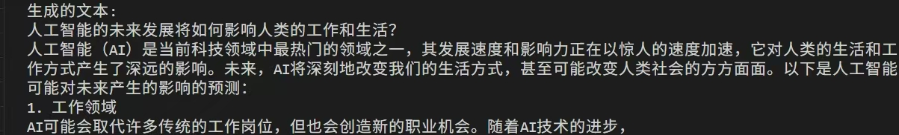

Deprecated
This page belongs to the Static Graph (GRAPH_MODE) Implementation section and has been marked as deprecated. New features are primarily being developed in the “r2.0.0 Dynamic Graph Implementation” section. Please refer to the dynamic graph documentation first.
Practice Case: Using GLM4-9B for Multi-Device Model Fine-Tuning

This article is contributed by Killjoy, chen-xialei, fuyao-15989607593, laozhuang, and oacjiewen.
This case uses the MindSpore framework and MindSpore Transformers LLM suite to guide users through fine-tuning the GLM4-9B model to improve its performance on custom tasks. It covers the entire process of environment configuration, data preparation, weight conversion, model training, weight merging, inversion, and inference testing. The following steps will help you understand how to use MindSpore Transformers to train a model.
1. Environment Setup
Set up the environment by referring to MindSpore Transformers Installation Guidelines.
2. Dataset Preparations
One of the input dataset formats supported by MindSpore Transformers is MindRecord. The following demonstrates how to convert the format of an original dataset. The original dataset can be either an open-source dataset (such as Alpaca) or a custom dataset. First, convert the dataset into the JSON format, and ensure that each line of data in the dataset is processed into a dialog format, that is, a question-answer pair between the user and the model. Then, use the script provided by MindSpore Transformers to convert the dataset into the MindRecord format. The following uses the Alpaca dataset as an example to demonstrate the processing procedure. The Alpaca dataset contains 52,000 instruction data records, which is suitable for instruction fine-tuning of pre-trained LLMs.
Download the Alpaca dataset.
Open the
train.csvfile. You can see that the Alpaca dataset contains four attributes:instruction,input,output, andtext.textis the explanation of the dataset and can be ignored.To convert the dataset into the format of dialogs between users and models, you can concatenate
instructionandinputas the user input, and useoutputas the model output. Set the dialog format tochatml, the dialog input side tohuman, and the outputs side togpt.
For example, the first line of the Alpaca dataset is as follows:
"instruction": "Give three tips for staying healthy."
"input": ""
"output": "1. Eat a balanced and nutritious diet..."
"text": "Below is an instruction that describes a task. Write a response..."
The processed dataset should be in the following format:
[
{
"type": "chatml",
"conversations": [
{
"from": "human",
"value": "Give three tips for staying healthy."
},
{
"from": "gpt",
"value": "1. Eat a balanced and nutritious diet..."
}
]
},
{
# "Second data record..."
},
...
]
After the dataset is processed, use the data processing script provided by MindSpore Transformers to generate a dataset in MindRecord format.
python mindformers/tools/dataset_preprocess/glm4/glm4_preprocess.py \
--input_glob /path/to/dataset \
--vocab_file /path/tokenizer.model \
--seq_length 8192 \
--output_file /path/output_dataset.mindrecord
Note that the --seq_length parameter must be adjusted based on the actual situation of the dataset to ensure that the value is greater than the length of all dialogs in the dataset.
3. Multi-Device Training
3.1 Weight Conversion
During multi-device training of MindSpore Transformers, you need to convert the weight to the weight representation format of MindSpore in advance. First, download the GLM4-9B model. The downloaded files are as follows:
- config.json
- configuration.json
- generation_config.json
- model-00001-of-00004.safetensors
- model-00002-of-00004.safetensors
- model-00003-of-00004.safetensors
- model-00004-of-00004.safetensors
- model.safetensors.index.json
- tokenizer.json
- tokenizer_config.json
The weight conversion script depends on torch. Before running the script, run the following command to install torch:
pip install torch>=2.10.0
Then, convert the weight.
python convert_weight.py --model glm4 --input_path HF_CKPT_PATH --output_path MS_NOT_CONCAT_CKPT_PATH --dtype bf16 --config YAML_PATH
The convert_weight.py file is stored in the root directory of the MindSpore Transformers repository.
Parameters:
--model: Name of the model to be converted. Set this parameter toglm4.--input_path: Path of the model weight to be converted. Set this parameter to the downloaded Hugging Face weight path of GLM4.--output_path: Path for storing the converted weights. Set this parameter as required.--dtype: Value type of the weights. You can view theconfigfile of the downloaded model. The type must be the same as that of the Hugging Face weights.--config: Path of the parameter configuration file for weight conversion. You can adjust the parameter configuration file by referring tomindformers/configs/glm4/finetune_glm4_9b.yaml. Note that theseq_lengthattribute in the file must be the same as the length used during MindRecord conversion. Then, change the path to the adjusted path.
After the weight conversion, the output is the CKPT file of the entire model weights. If an error related to trust_remote_code is displayed, set trust_remote_code to True as prompted.
3.2 Parallel Strategy Configuration and Training Startup
Start the first fine-tuning job.
bash scripts/msrun_launcher.sh "run_mindformer.py \
--config configs/glm4/finetune_glm4_9b.yaml \
--load_checkpoint /path/to/ckpt \
--auto_trans_ckpt True \
--train_dataset /path/to/dataset \
--run_mode finetune" 8
If --auto_trans_ckpt is set to True, the weight is automatically split or merged based on parallel config in finetune_glm4_9b.yaml, and the weight folder transformed_checkpoint and distributed policy folder strategy are generated. The last 8 indicates 8-device training. If other number of devices is used, change the value accordingly.
If automatic weight conversion is enabled (
auto_trans_ckptis set toTrue), the originalstrategyandtransformed_checkpointfolders will be cleared, and the conversion result of the latest task will be saved. If necessary, save it to a custom folder.
When resuming training from a checkpoint, you can add or modify the following parameters in the previous command:
--load_checkpoint /path/to/last_checkpoint \
--resume_training True \
--auto_trans_ckpt False
When distributed training starts, the training log is generated in the /mindformers/output/msrun_log/ folder. You can open the worker_0.log file to check whether the training process is normal.
3.3 Weight Merging
As the weights are split during multi-device training, you need to run the following script to merge the weights after the training is complete:
python mindformers/tools/transform_ckpt.py --src_ckpt_strategy SRC_CKPT_STRATEGY --dst_ckpt_strategy None --src_ckpt_dir SRC_CKPT_DIR --dst_ckpt_dir DST_CKPT_DIR
Some important parameters:
--src_ckpt_strategy: path of the distributed policy file of the weights to be converted. (This file is generated during training.)--src_ckpt_dir: path of the weights to be converted. (This file is generated during training.)--dst_ckpt_strategy: path of the distributed policy file of the target weights. In this case, the merged weights are complete weights and do not have a distributed policy. Therefore, set this parameter toNone.--dst_ckpt_dir: user-defined path for saving the target weights.
For details about the parameters, see Ckpt Weights | MindSpore Transformers Documentation | MindSpore Community.
3.4 Reverse Weight Conversion
The weight format used in the training process is the MindSpore version. If you need to deploy the model using an inference framework such as vLLM, you need to convert the weight format to the Hugging Face format. The essence of weight conversion is to make the weight dictionary one-to-one correspond to the Hugging Face model dictionary. Therefore, the official script convert_reversed.py is modified to implement the conversion of the weight format and the mapping between dictionary names. Only the saving part needs to be modified. First, analyze the code. The function to be modified is convert_ms_to_pt.
print('saving pt ckpt....')
torch.save(pt_param, output_path)
print(f"Convert finished, the output is saved to {output_path}")
This section describes the process of saving the original file model. Now, the function is modified to save the model in the Safetensors format.
First, delete the preceding three lines and import the library for saving the model in the Safetensors format to the header file.
from safetensors.torch import save_file
A Safetensors file cannot be too large. Therefore, you need to set a value in advance to save the model in split_num parts. This parameter can be specified through the --safetensor_split_num parameter. The variable that stores all weights in the script is the dictionary pt_param. First, divide the dictionary into split_num parts.
def split_dict(d, n):
"""
Divide the dictionary d evenly into n parts.
A list is returned, in which each element is a dictionary.
"""
items = list(d.items())
k, m = divmod(len(items), n)
return [dict(items[i * k + min(i, m):(i + 1) * k + min(i + 1, m)]) for i in range(n)]
split_dicts = split_dict(pt_param, split_num) # Split the weights of the entire model into multiple Safetensors files for saving.
When the model is converted to the Safetensors format, a model.safetensors.index.json file is required to record where the weights of each layer of the model are saved. Therefore, you need to record the following information when saving the weights:
converted_st_map = defaultdict()
converted_st_map["weight_map"] = defaultdict()
converted_st_map["metadata"] = defaultdict()
for split_id in range(len(split_dicts)):
saving_file_name = f"model-{split_id + 1:05d}-of-{split_num:05d}.safetensors"
logger.info(f"saving weights in split-{split_id + 1} to file {saving_file_name}")
for k, v in tqdm(split_dicts[split_id].items(), total=len(ckpt_dict), desc="Processing checkpoints"):
converted_st_map["weight_map"][k] = saving_file_name
total_size += get_torch_storage_size(split_dicts[split_id].get(k))
save_file(split_dicts[split_id], os.path.join(output_path, saving_file_name))
converted_st_map["metadata"]["total_size"] = total_size
converted_model_index_file = os.path.join(output_path, f"model.safetensors.index.json")
with open(converted_model_index_file, "w") as f:
json_string = json.dumps(converted_st_map, default=lambda x: x.__dict__, sort_keys=False, indent=2)
f.write(json_string)
Run the reverse conversion script. The converted weight file in the Safetensors format and a model.safetensors.index.json file have been saved in the directory. The following is an example of the directory (assuming that the weight file is split into 40 storage copies, that is, the value of --safetensor_split_num is 40):
- model-00001-of-00040.safetensors
- model-00002-of-00040.safetensors
- model-00003-of-00040.safetensors
...
- model-00039-of-00040.safetensors
- model-00040-of-00040.safetensors
- model.safetensors.index.json
In this case, you need to find the original repository of the model and copy the remaining files such as the tokenizer to the directory. The copied files in the directory are as follows:
- model-00001-of-00040.safetensors
- model-00002-of-00040.safetensors
- model-00003-of-00040.safetensors
...
- model-00039-of-00040.safetensors
- model-00040-of-00040.safetensors
- model.safetensors.index.json
- config.json
- configuration_chatglm.py
- generation_config.json
- modeling_chatglm.py
- tokenization_chatglm.py
- tokenizer_config.json
- tokenizer.model
Inference Test
You can use the PyTorch framework to test the reversed weight on the NPU or GPU. The following is a simple example program of NPU + PyTorch. After installing related dependencies by referring to Documentation, run the program to test whether the reversed model weight can be properly loaded and whether inference can be performed.
from transformers import AutoModelForCausalLM, AutoTokenizer
import torch
import torch_npu # Import the PyTorch NPU adaptation library.
# Load the model and tokenizer.
model_name = "/path/to/model"
device = torch.device("npu:0")
tokenizer = AutoTokenizer.from_pretrained(model_name, trust_remote_code=True)
model = AutoModelForCausalLM.from_pretrained(model_name, trust_remote_code=True).half().to(device)
# Set the model to evaluation mode.
model.eval()
# Input texts.
input_text = "Future development of artificial intelligence"
# Encode the input.
input_ids = tokenizer.encode(input_text, return_tensors="pt").to(model.device)
with torch.no_grad():
output = model.generate(
input_ids,
max_length=100, # Maximum generation length.
num_return_sequences=1, # Number of returned sequences.
no_repeat_ngram_size=2, # Avoid repeated n-grams.
# early_stopping=True # Stop in advance.
)
# Decode the output.
generated_text = tokenizer.decode(output[0], skip_special_tokens=True)
print("Generated text:")
print(generated_text)
Example of the running result:
